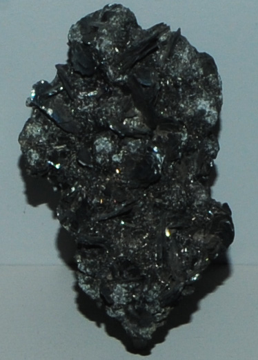

|

| Pb5Sb8S17
This sample of plagionite is displayed in the Smithsonian Museum of Natural History. Plagionite is an sulfide mineral of antimony and lead with the composition Pb5Sb8S17 . This sample is about 6x9 cm and is from Oruro, Bolivia. It is described as plagionite with frankeite and boulangerite.
|